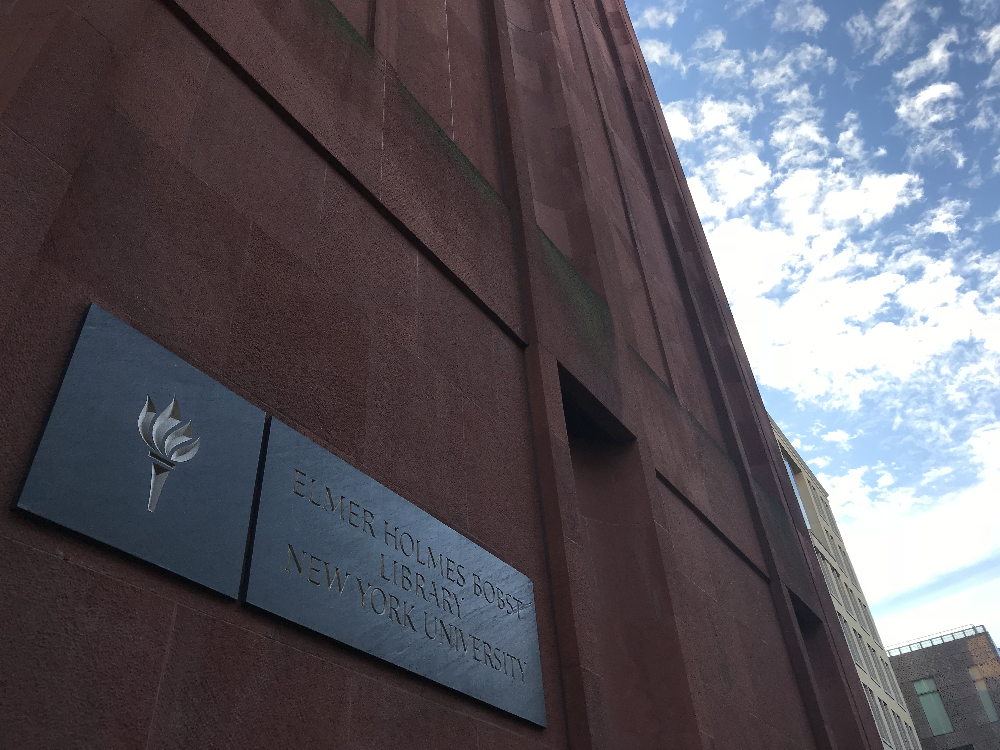

SELECTED PROJECTS
- Graduate Research Assistant May. 2018 - Present
-
• Scraped Twitter data of Hurricane Harvey in Houston and designed Python script to processing and labeling data. Build and train LSTM model that can detect fake news tweets, bots and fake accounts. - Capstone: Digital Traces of Predatory Landlord, Attorney General Jun. 2018 - present
-
• Construct PostgreSQL database to utilize rent data, 311 complaints data and housing court eviction data etc; Detect potential bad landlords using logistic regression and support vector machines(SVM) - CUSP London Student Hackathon Mar. 2018 - Apr. 2018
-
• Collaborated with students from King’s College London and University of Warwick to use machine learning techniques to address causality, variation, reduction and policy impacts problems of road safety and traffic accidents in London. - Flask and Relational Database Based Social Networking Site Design Mar. 2018 - May. 2018
-
• Constructed backend with MySQL and designed schema for database, designed and developed the web frontend with Flask, Jinja2 and AJAX. The functionality of the website includes: user registration, profile update, follow companies, job application, connect with friends, instant messaging and search etc.
Programming and Software

In my MS program, I gained the ability to use large-scale data from a variety of sources to understand and address real-world challenges. Many Thanks to CUSP.